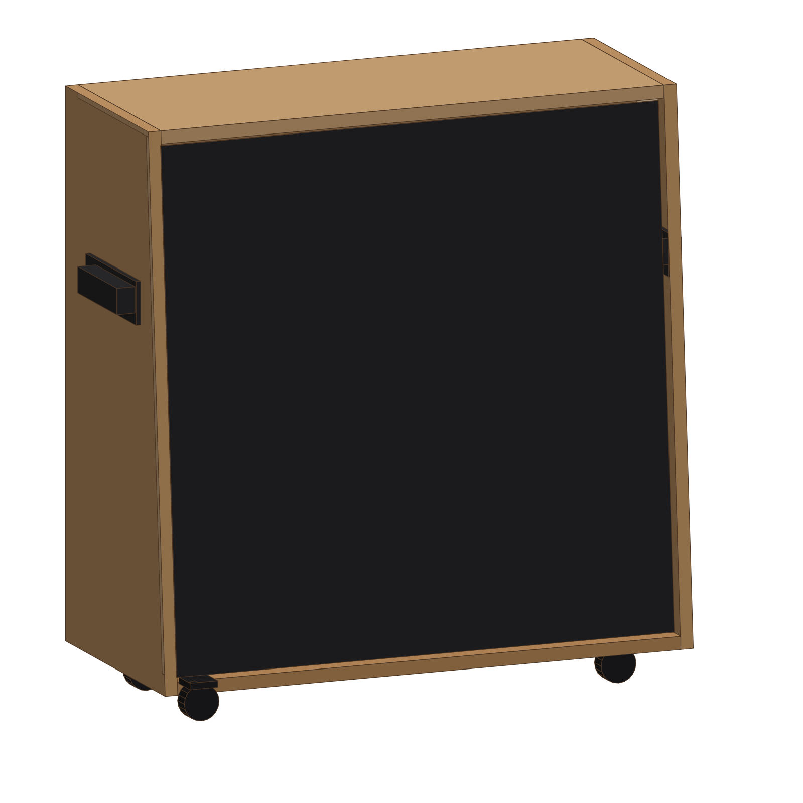

412 吉他箱体 · DIY 全套图纸
参考 Marshall 1960A 外形 · 760 × 760 × 355 · 18mm 桦木多层板 · R6 圆角 + 黑色喷涂 · 木材约 ¥700

打开 3D 模型 →
拖动旋转 / 滚轮缩放 / 分解看内部结构
下载全套图纸 PDF →
9 页 A3，1:1 打印即可下料
看制作说明 →
工艺、预算、施工顺序、避坑清单
GitHub 仓库 →
全部 SVG / CSV / 生成脚本
项目
数值
外形 宽 × 高 × 深
760 × 760 × 355（顶深 295）
前脸倾角
4.51°（顶面内收 60）
板厚 / 外棱圆角
18mm / R6
喇叭
4 × 12 寸，中心间距 340，开孔 Ø283
障板（平面）
724 × 726.3，斜置
网罩框
720 × 722.3，开 4×Ø316，磁吸
木材（含开料）
约 ¥700（2 张 1220×2440）
打印机请选「实际大小 / 100%」，不要选「适合页面」。
本设计参考 Marshall 1960A 公开外形尺寸，结构与原厂不同，仅供自制参考。
CC BY-NC-SA 4.0
· 脚本
MIT